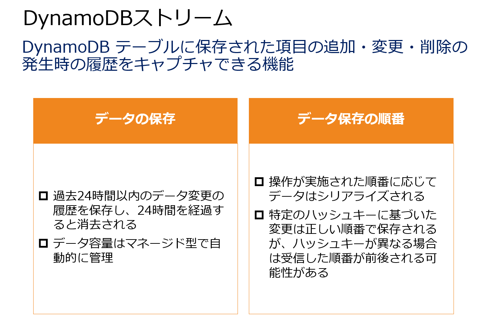

このシナリオでは、「アプリケーションのトランザクション結果を複数の経理関連のアプリケーションと共有すること。」「この共有方式は、スケーラブルでほぼリアルタイムに実現すること。」「トランザクション処理結果をドキュメントデータベースに保存する前に、機密性の高いデータを削除する前処理を実施すること。」の3つの要件を実現するソリューションが求められています。
オプション１が正解となります。「トランザクション処理結果をドキュメントデータベースに保存する前に、機密性の高いデータを削除する前処理を実施すること。」に対応するためには、トランザクションデータを直接にDynamoDBテーブルに保存してDynamoDBトランザクション機能を利用します。DynamoDBトランザクション機能はDynamoDBテーブルへの書き込みなどのトランザクション発生時に特定の処理を実行させることができる機能です。これによって、DynamoDBテーブルへのデータ書き込み時に機密性の高いデータを削除するアクションを設定して機密データを削除します。
DynamoDB トランザクション機能は、DynamoDBテーブルに対する1 つのオペレーションとして複数の項目の追加、更新、または削除が必要となる複雑なビジネスワークフローを管理できます。それによって、機密データの項目を指定して削除するワークフローを設定できます。
DynamoDB トランザクション機能では、以下のようにアクションを実施することができます。
Put — PutItem オペレーションを開始し、条件付きで、または条件をまったく指定せずに、新しい項目を作成するか、古い項目を新しい項目に置き換えます。
Update — UpdateItem オペレーションを開始し、既存の項目の属性を編集するか、まだ存在しない場合は新しい項目をテーブルに追加します。条件付きまたは条件なしで既存の項目で属性を追加、削除、更新するには、このアクションを使用します。
Delete — DeleteItem オペレーションを開始し、プライマリキーにより識別される 1 つの項目をテーブルで削除します。
ConditionCheck — 項目が存在することを確認するか、項目の特定の属性の条件を確認します。
「アプリケーションのトランザクション結果を複数の経理関連のアプリケーションと共有すること。」に対応するため、DynamoDBストリームを有効化して、他のアプリケーションとトランザクションデータを共有します。
DynamoDBストリーム はDynamoDB テーブル内の項目レベルの変更に関するシーケンスを時間順にキャプチャして保存する機能です。DynamoDBストリームによってDynamoDBテーブルに対するデータ変更が発生すると、Lambda関数などにリアルタイムに変更点をデータ連携するような構成が可能となります。
これによって、DynamoDBテーブルにデータが保存された際に、そのストリームデータを他のアプリケーションに共有する仕組みをリアルタイムに実現することができます。

オプション２と３は不正解です。Amazon Kinesis Data FirehoseはデータをAmazon DynamoDBに配信することができません。Kinesis Data FirehoseはAmazon S3、Amazon Redshift、Amazon OpenSearchサービス、SplunkとHTTP エンドポイント送信先にデータを配信することができます。さらにこの回答は、Amazon S3とDynamoDBの２つのストレージ先にデータを保存しており、非常にコスト効率の悪い構成となっています。
オプション4は不正解です。Amazon EMRにおいてLambda関数と連携して、機密性の高いデータを削除する処理はできません。Amazon EMR を使用すると、ビッグデータフレームワークを使用してデータを処理および分析するクラスターを作成します。ビッグデータやストリーミングデータに対するクレンジング処理も可能なため、特定のデータを指定して削除しながら、DynamoDBテーブルにデータを保存するパイプラインを構成できます。しかしながら、その際にLambda関数は必要ありません。
【参照】
Amazon DynamoDB Transactions: 仕組み - Amazon DynamoDB
DynamoDB トランザクションで複雑なワークフローを管理する - Amazon DynamoDB
DynamoDB Streams の変更データキャプチャ - Amazon DynamoDB